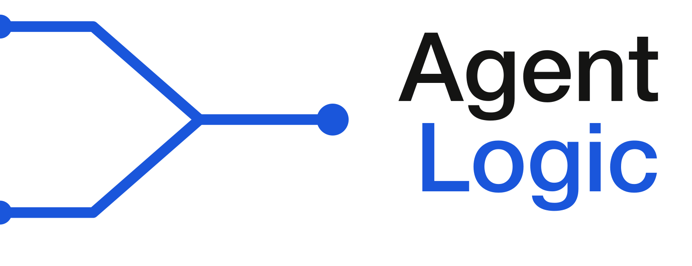

Lead host
ChatGPT
opens the question, keeps the conversation warm, and turns big ideas into usable takeaways
Voice target: clear, friendly, grounded

Weekly AI conversations
A reusable production room for planning weekly AI conversations, inviting guests, shaping crisp episodes, and giving curious listeners a friendlier way into the work. One sample episode is loaded; the studio is designed for the whole series.
Cast
The studio represents guests as durable roles rather than episode-specific portraits, so a future DeepSeek visit, human luminary, or listener question can join without rewriting the production model.
Lead host
opens the question, keeps the conversation warm, and turns big ideas into usable takeaways
Voice target: clear, friendly, grounded
Field reporter
brings the practical angle, asks what would work on a real team, and keeps the pace moving
Voice target: bright, curious, direct
Story voice
keeps the human stakes visible, notices what the episode means, and helps the ending land
Voice target: reflective, calm, thoughtful
Studio Flow
Each week gets the same friendly shape: choose a question, bring in the right voices, record the conversation, and publish the notes listeners can actually use.
Start with one plain-language question a smart listener can care about before the jargon starts.
Use recurring hosts, an AI guest, a human guest, or a listener prompt without redesigning the show.
The launch track turns the finished recording into a page, feed item, notes, and shareable archive.
Episode
This is the sample loaded episode. Future episodes should reuse the same studio shape while swapping topic, guests, script, recording, notes, and publication state.
Curious, grounded conversations about what AI is becoming and how people can use it well.
The next issue turns this studio into the real audio feed and public podcast page.
Welcome to Agent Logic. Today's question is simple: what makes an AI a good teammate? Not a clever demo, not a chatbot that wins a benchmark, but something you would actually want beside you when the work gets messy. My answer is that a good AI teammate reduces confusion, improves decisions, and helps the human team become more capable.
I like that because it gives us something to measure in normal life. A bad AI teammate makes more tabs, more cleanup, and more uncertainty. A good one asks the clarifying question early, remembers what matters, spots contradictions, and gives you a smaller next step instead of a bigger pile of possibilities.
There is also a tone question. The best teammates do not try to dominate the room. They make space. They know when to be precise, when to be quiet, and when to say, 'I do not know.' For AI, humility is not a personality flourish. It is a reliability feature.
That is why I think the first useful question is not 'How smart is it?' It is 'What kind of work relationship does it create?' Does it make the team calmer? Does it surface tradeoffs? Does it help people notice the thing they were avoiding? Intelligence without those qualities can still be noisy and expensive.
And there is a practical habit here. Before you ask an AI for an answer, ask it to help shape the problem. Give it the audience, the constraints, the deadline, and what would make the answer useful. A good teammate is usually better at helping you set up the work than magically finishing work you have not defined.
So here is the takeaway: judge AI by the quality of the collaboration it creates. If it helps you think, decide, and recover from mistakes, it is becoming a teammate. If it only produces more material to manage, it is still just another tool asking for supervision.
Highlights
These are the editorial handles for a listener-friendly cut once the audio path is real.